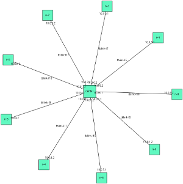
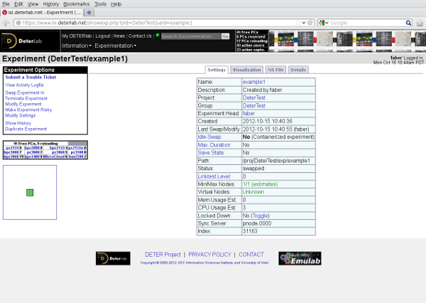
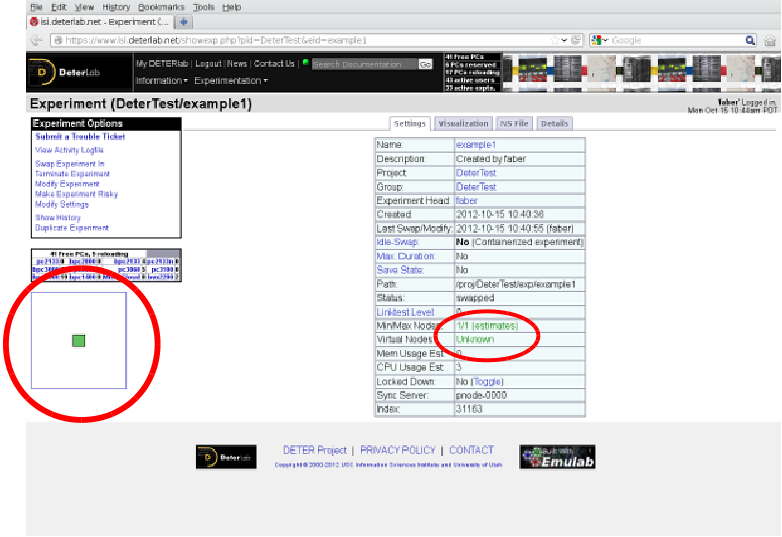
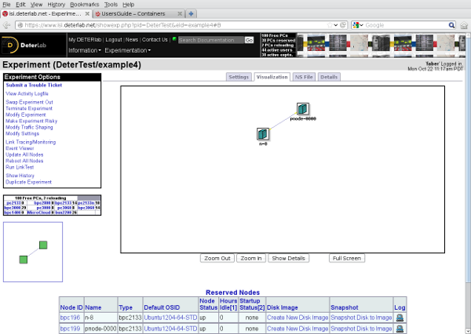
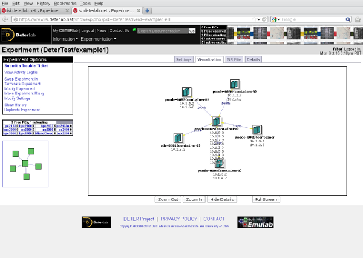
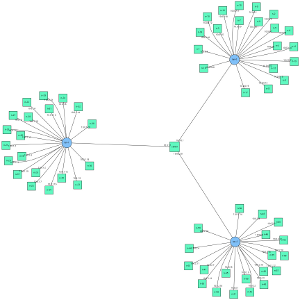
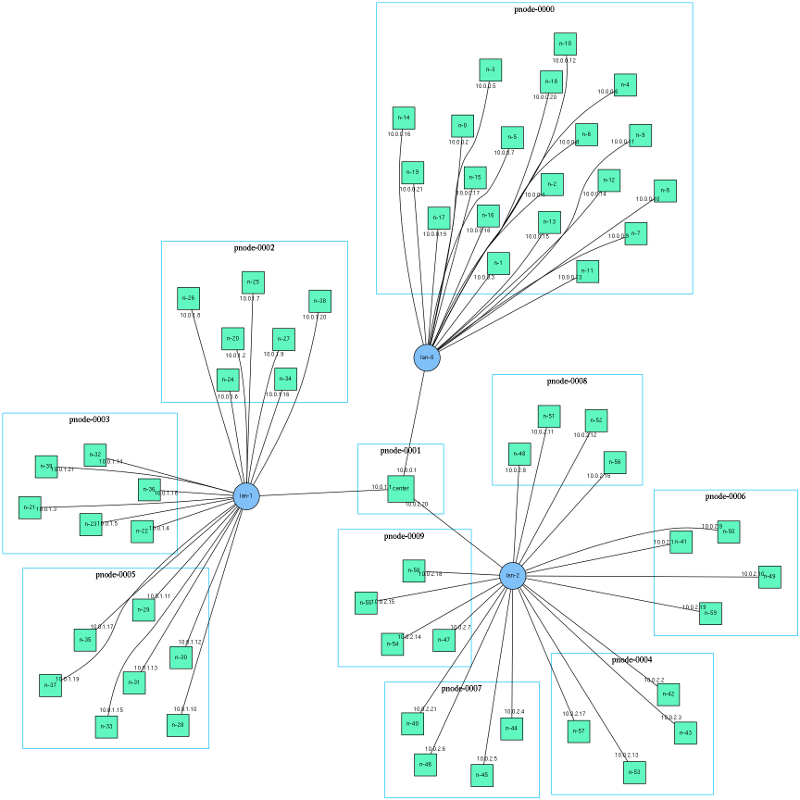
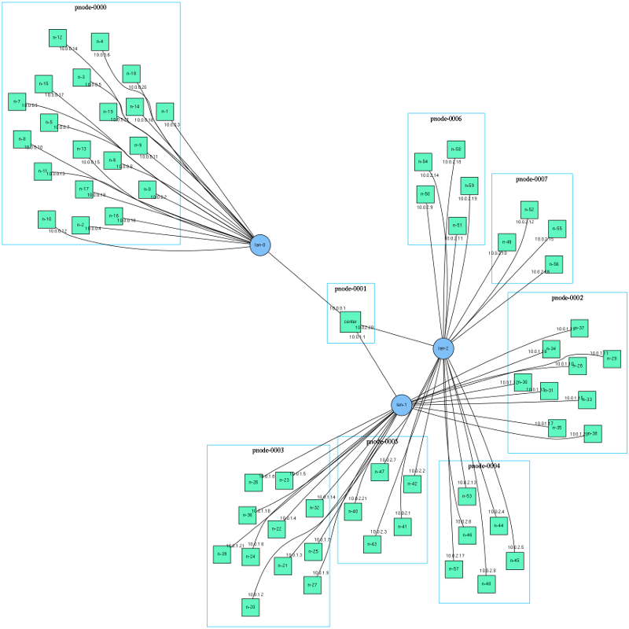
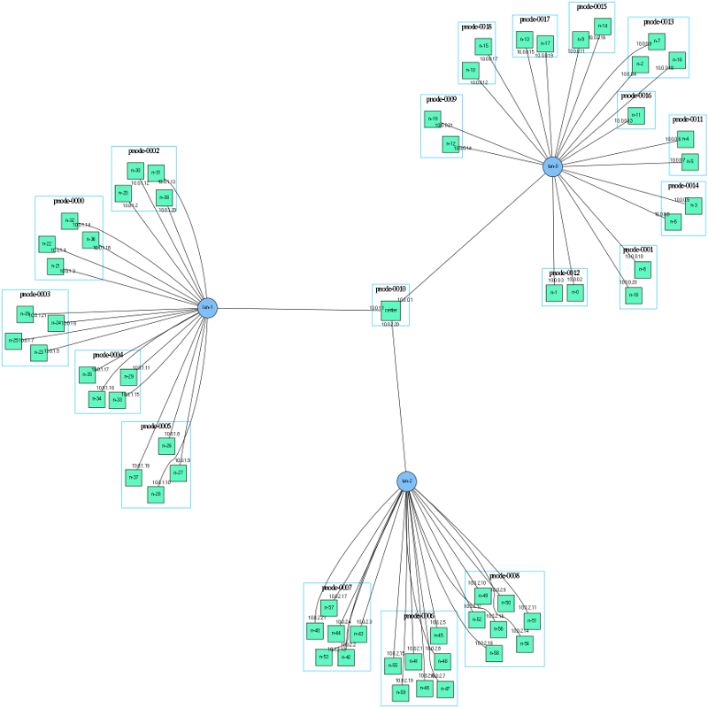

In this tutorial we walk you through setting up a basic containerized experiment. This page also includes common advanced topics. Detailed descriptions of the commands and configuration files are available in the reference section.
Note
If you are a student, go to the http://education.deterlab.net site for classroom-specific instructions.
Basic Containers Tutorial
This tutorial will set up a containerized experiment with a star topology. We'll create a central node and connect 9 other nodes to it
Getting started
You will need a DETERLab account and be a member of a project. If you need help, see the Core Guide.
Step 1: Design the topology
First, we will describe a star topology.

For this example we will use the standard DETER topology descriptions. If you are new to designing topologies, walk through the basic tutorial in the Core Guide. The Containers system is largely compatible with the physical DETER interface.
Download the DETERLab-compatible ns2 description of this topology at this link to your home directory on users.isi.deterlab.net. It is a simple loop, along with the standard DETER boilerplate. This file will be used to create a 10-node (9 satellites and one central node) physical experiment on DETER, although there are not many physical nodes on DETER with 10 interfaces (one interface for control traffic).
The following is the topology description:
source tb_compat.tcl
set ns [new Simulator]
# Create the center node (named by its variable name)
set center [$ns node]
# Connect 9 satellites
for { set i 0} { $i < 9 } { incr i} {
# Create node n-1 (tcl n($i) becomes n-$i in the experiment)
set n($i) [$ns node]
# Connect center to $n($i)
ns duplex-link $center $n($i) 100Mb 10ms DropTail
}
# Creation boilerplate
$ns rtptoto Static
$ns run
Note
- The central node is named "center" and each satellite is names "n-0", "n-1"... through "n-8".
- Each connection is a 100 Mb/s link with a 10ms delay.
- The round trip time from n-0 to center will be 20 ms and from n-0 to n-1 will be 40 ms.
Step 2: Create the containerized experiment
Now we will run a command so the Containers system will build the containerized experiment on top of a new DETERLab physical experiment.
Run the following command from the shell on users.isi.deterlab.net and refer to the example topology you just saved in your home.
$ /share/containers/containerize.py DeterTest example1 ~/example1.tcl
where the first two parameters are the project and experiment name to hold the DETER experiment.
This command creates an experiment called experiment1 in the DeterTest project. Throughout this tutorial, we will refer to your project as DeterTest, but make sure you actually use your actual project's name. You may use the experiment name experiment1 as long as another experiment with that name doesn't already exist
Note
As with any DETERLab experiment, you must be a member of the project with appropriate rights to create an experiment in it. containerize.py expects there to be no experiment with that name, and it will fail if one exists. To remove an experiment you may terminate it through the web interface or use the endexp command. Terminating an experiment is more final than swapping one out, so be sure that you want to replace the old experiment. You may also resolve the conflict by renaming your new containerized experiment.
The last parameter is the file containing the topology. In this tutorial, we are referring to the ns2 file in our example but you may also use a topdl description. An ns2 description must end in .tcl or .ns.
With these default parameters containerize.py will put each node into an Openvz container with at most 10 containers per physical node.
The output of the above command should be something like the following:
users:~$ /share/containers/containerize.py DeterTest example1 ~/example1.tcl
Containerized experiment DeterTest/example1 successfully created!
Access it via http://www.isi.deterlab.net//showexp.php3?pid=DeterTest&eid=example1
Now we can see what a containerized experiment looks like.
The Contents of a Containerized Experiment
Follow the link provided in the containerize.py output. You will see a standard DETER experiment page that looks like this:

You may be surprised to see that DETER thinks the experiment has only one node:

The Containers system has rewritten the description file and stored additional information in the experiment's per-experiment directory that will be used to create the 10 node experiment inside the single-node DETER experiment.
If you look at the ns file DETERLab has stored (click the NS File tab on the experiment page), you should see the following code:
set ns [new Simulator]
source tb_compat.tcl
tb-make-soft-vtype container0 {pc2133 bpc2133 MicroCloud}
set pnode(0000) [$ns node]
tb-set-node-os ${pnode(0000)} CentOS6-64-openvz
tb-set-hardware ${pnode(0000)} container0
tb-set-node-startcmd ${pnode(0000)} "sudo /share/containers/setup/hv/bootstrap /proj/DeterTest/exp/example1/containers/site.conf >& /tmp/container.log"
tb-set-node-failure-action ${pnode(0000)} "nonfatal"
$ns rtproto Static
$ns run
This looks nothing like the file we gave to containerize.py, but it does show us a little about what the Containers system has done:
- The single physical node (
pnode(0000)) will run theCentOS6-64-openvzimage and run on a few kinds of node. - On startup,
pnode(0000)will execute a command from the same/share/containersdirectory thatcontainerize.pyran from using data in the per-experiment directory/proj/DeterTest/exp/example1/containers/site.conf. - There is a separate
/proj/DeterTest/exp/example1/containers/directory for each experiment. The path element after/projis replaced with the project under which the experiment was created --DeterTestin this example -- and the element afterexpis the experiment name --example1in this case. These directories are created for all DETERLab experiments.
containers sub-directory
The containers sub-directory of a containerized experiment holds information specific to a containerized experiment. There are a few useful bits of data in that per-experiment containers directory that we can look at.
- Copy of the topology file: First, a copy of the topology that we gave to
containerize.pyis available in/proj/DeterTest/exp/example1/containers/experiment.tcl. If the experiment is created from a topdl file, the filename will becontainers/experiment.tcl. - Visualization of experiment: A simple visualization of the experiment is in
containers/visualization.png. This is annotated with node and network names as well as interface IP addresses. The topology depiction above is an example. To view a larger version, click here. - IP-to-hostname mapping: The
containers/hostsfile is a copy of the IP-to-hostname mapping found on each virtual machine in the topology. It can be useful in converting IP addresses back to names. It is installed in/etc/hostsor the equivalent on each machine. - PID/EID: The two files
/var/containers/pidand/var/containers/eidcontain the project name and experiment name. Scripts can make use of these.
{kind=link}
The rest of the contents of that directory are primarily used internally by the implementation, but a more detailed listing is in the Containers Reference.
Step 3: Swap-in resources
At this point, as with any DETER experiment, the topology does not yet have any resources attached. To get the resources, swap the experiment in from the web interface or using the swapexp command. See the DETERLab Core Guide for more information.
Step 4: Verify virtual topology and access nodes
Once you have been notified that the physical experiment has finished its swap-in, the Containers system starts converting the physical topology into the virtual topology.
At this time, you must manually verify when the virtual topology has been created by ping-ing or trying to SSH into individual nodes of an experiment. There is also a workaround suggested below. We are working towards offering a better notification system.
Once the containerized elements have all started, the nodes are available as if they were physical nodes. For example, we may access node n-0 of the experiment we swapped in by running:
$ ssh n-0.example1.detertest
Be sure that you replace example1 with the experiment name you passed to containerize.py and DeterTest with the project you created the experiment under. This is a DNS name, so it is case-insensitive.
When the SSH succeeds, you will have access to an Ubuntu 10.04 32-bit node with the same directories mounted as in a physical DETERLab experiment. Containerized nodes access the control net as well. Your home directory will be mounted, so your SSH keys will work for accessing the machine.
Use the same node naming conventions as physical DETERLab experiments to ping and access other nodes.
Here is a ping from n-0 to center and n-1 that confirms the containerized experiment is working as we expect.
n-0:~$ ping -c 3 center
PING center-tblink-l21 (10.0.0.2) 56(84) bytes of data.
64 bytes from center-tblink-l21 (10.0.0.2): icmp_seq=1 ttl=64 time=20.4 ms
64 bytes from center-tblink-l21 (10.0.0.2): icmp_seq=2 ttl=64 time=20.0 ms
64 bytes from center-tblink-l21 (10.0.0.2): icmp_seq=3 ttl=64 time=20.0 ms
--- center-tblink-l21 ping statistics ---
3 packets transmitted, 3 received, 0% packet loss, time 2002ms
rtt min/avg/max/mdev = 20.052/20.184/20.445/0.184 ms
n-0:~$ ping -c 3 n-1
PING n-1-tblink-l5 (10.0.6.1) 56(84) bytes of data.
64 bytes from n-1-tblink-l5 (10.0.6.1): icmp_seq=1 ttl=64 time=40.7 ms
64 bytes from n-1-tblink-l5 (10.0.6.1): icmp_seq=2 ttl=64 time=40.0 ms
64 bytes from n-1-tblink-l5 (10.0.6.1): icmp_seq=3 ttl=64 time=40.0 ms
--- n-1-tblink-l5 ping statistics ---
3 packets transmitted, 3 received, 0% packet loss, time 2003ms
rtt min/avg/max/mdev = 40.094/40.318/40.764/0.355 ms
The nodes have the expected round trip times.
At this point you can load and run software and generally experiment normally.
Start Commands
DETERLab Core provides a facility to run a command when a physical experiment starts, called start commands. A containerized experiment offers a similar facility with a few differences:
- The start commands are not coordinated across nodes. In a physical experiment, the start commands all execute when the last node has reported to the testbed that it has completed booting. In a containerized experiment, the start commands run when the containerized node has come up.
- Logs from the start command are available in
/var/containers/log/start_command.outand/var/containers/log/start_command.err. This is true on embedded pnodes as well. - Start commands must be shorter than in a physical experiment because the Containers system is also using the facility.
- The event system cannot be used to replay the start command.
Notes
- While start commands that make use of shell syntax for multiple commands and simple file redirection (e.g, > or <) may work, errors parsing redirection or other shell commands will cause the start command to fail silently. If you are doing anything more complex than calling a single program, we recommend that you create a simple script and run the script from the per-experiment directory or your home directory. This makes it more likely that the log files created by containers will have useful debugging information.
- We strongly recommend removing all shell redirection characters from the text of your start command. Redirecting I/O in the text of the start command may fail silently.
Start commands offer a simple workaround for detecting that all nodes in an experiment have started:
#!/bin/sh
STARTDIR="/proj/"`cat /var/containers/pid`"/exp/"`cat /var/containers/eid`"/startup"
mkdir $STARTDIR
date > $STARTDIR/`hostname`
If you make the script above the start command of all nodes, the Containers system will put the time that each local container came up in the startup directory under the per-experiment directories. For example, n-0.example1.DeterTest will create /proj/DeterTest/exp/example1/startup/n-0. Then you may monitor that directory on users to know which nodes are up.
Step 4: Releasing Resources
As with a physical DETER experiment, release resources by swapping the experiment out using the web interface or the swapexp command (see the Core Guide for more information. If you are using the startcommand workaround to detect startup, clear the startup directory when you swap the experiment out.
Advanced Topics
The previous tutorial described how to create an experiment using only openvz containers packed 10 to a machine. This section describes how to change those parameters.
Using Other Container Types
To change the container type that containerize.py assigns to nodes, use the --default-container option. Valid choices follow the [ContainersQuickstart#KindsofContainers kinds of containers] DETERLab supports. Specifically:
| Parameter | Container |
|---|---|
embedded_pnode |
Physical Node |
qemu |
Qemu VM |
openvz |
Openvz Container |
process |
ViewOS process |
You can try this on our example topology:
users:~$ /share/containers/containerize.py --default-container qemu DeterTest example2 ~/example1.tcl
Requested a QEMU node with more than 7 experimental interfaces. Qemu nodes
can only support 7 experimental interfaces.
The Containers system is now using qemu containers to build our experiment. Unfortunately qemu containers only support 7 experimental interfaces, an internal limit on the number of interfaces the virtual hardware supports. Run the command again but use the attached version of the topology with fewer satellites to containerize without error.
$ /share/containers/containerize.py --default-container qemu DeterTest example2 ~/example2.tcl
Containerized experiment DeterTest/example2 successfully created!
Access it via http://www.isi.deterlab.net//showexp.php3?pid=DeterTest&eid=example2
The qemu experiment looks much like the openvz experiment above, at this small scale. Qemu nodes more completely emulate hardware and the kernels are independent, unlike openvz containers. For example, a program can load kernel modules in a qemu VM, which it cannot do in an openvz container. The qemu containers load the Ubuntu 12.04 (32 bit) distribution by default.
We can also swap in the experiment using ViewOS processes, but processes cannot be manipulated from outside. They are too lightweight to allow an SSH login, though they will run a start command.
Mixing Containers
Mixing containers requires you to assign container types in the topology description. This is done by attaching an attribute to nodes. The attribute is named containers:node_type and it takes the same values as the --default-container parameter to containerize.py. If the experiment definition is in topdl, the attribute can be attached using the standard topdl routines. Attaching the attribute in ns2 is done using the DETERLab tb-add-node-attribute command.
tb-add-node-attribute $node containers:node_type openvz
Using this command in an ns2 topology description will set node to be placed in an openvz container. Using this feature, we can modify our first example topology to consist of qemu nodes and a single process container in the center. Process nodes can have unlimited interfaces, but we cannot log into them. The new topology file looks like this:
source tb_compat.tcl
set ns [new Simulator]
# Create the center node (named by its variable name)
set center [$ns node]
# The center node is a process
tb-add-node-attribute $center containers:node_type process
# Connect 9 satellites
for { set i 0} { $i < 9 } { incr i} {
# Create node n-1 (tcl n($i) becomes n-$i in the experiment)
set n($i) [$ns node]
# Satellites are qemu nodes
tb-add-node-attribute $n($i) containers:node_type qemu
# Connect center to $n($i)
ns duplex-link $center $n($i) 100Mb 10ms DropTail
}
# Creation boilerplate
$ns rtptoto Static
$ns run
Because we have explicitly set the container_node_type of each node, the --default-container parameter to containerize.py does nothing. Create this experiment by running:
users:~$ /share/containers/containerize.py DeterTest example3 ~/example3.tcl
Containerized experiment DeterTest/example3 successfully created!
Access it via http://www.isi.deterlab.net//showexp.php3?pid=DeterTest&eid=example3
When we swap it in, the experiment will have 10 satellite containers in qemu VMs and a central process that only forwards packets. Again, you cannot log in to a process container, but you can use the qemu nodes as though they were physical machines.
Another interesting mixture of containers is to include a physical node. Here is a modified version of our mixed topology that places the n-8 satellite on a physical computer by setting its containers:node_type to embedded_pnode.
After running that experiment you should have output similar to the following:
users:~$ /share/containers/containerize.py DeterTest example4 ~/example4.tcl
Containerized experiment DeterTest/example4 successfully created!
Access it via http://www.isi.deterlab.net//showexp.php3?pid=DeterTest&eid=example4
Follow the url to the DETERLab experiment page and look at the Visualization tab:

The physical node n-8 shows up in the DETERLab visualization and otherwise acts as a physical node that is in a 10-node topology. This experiment uses three different container types: physical nodes, ViewOS processes, and Qemu VMs.
Limitations on Mixing Containers
At the moment, Qemu VMs and ViewOS processes are the only containers that can share a physical node. Physical node containers are mapped one-to-one to physical nodes by definition. Qemu and OpenVZ use different underlying operating system images in DETERLab, therefore they cannot share physical hardware. Neither ViewOS processes nor Qemu VMs can share a physical machine with OpenVZ VMs.
The first invocation of tb-add-node-attribute takes precedence. It is best to only call tb-add-node-attribute once per attribute assigned on each node.
Setting Openvz Parameters
An advantage of openvz nodes is that you can set the OS flavor and CPU bit-width across experiments and per-node. Similarly, you can set the size of the disk allocated to each node.
Openvz uses templates to look like various Linux installations. The choices of Linux distribution that openvz supports are:
| Template | Distribution | Bit-width |
|---|---|---|
| centos-6-x86 | CentOS 6 | 32 bit |
| centos-6-x86_64 | CentOS 6 | 64 bit |
| ubuntu-10.04-x86 | Ubuntu 10.04 LTS | 32 bit |
| ubuntu-10.04-x86_64 | Ubuntu 10.04 LTS | 64 bit |
| ubuntu-12.04-x86 | Ubuntu 12.04 LTS | 32 bit |
| ubuntu-12.04-x86_64 | Ubuntu 12.04 LTS | 64 bit |
The default template is ubuntu-10.04-x86.
To set a template across an entire topology, give --openvz-template and the template name from the list above. Invoking containerize.py on our original example as below will instantiate the experiment under 64-bit Ubuntu 12.04:
users:~$ /share/containers/containerize.py --openvz-template ubuntu-12.04-x86_64 DeterTest example1 ~/example1.tcl
Containerized experiment DeterTest/example1 successfully created!
Access it via http://www.isi.deterlab.net//showexp.php3?pid=DeterTest&eid=example1
To set the size of the file system of containers in the experiment, use --openvz-diskspace. The value of the parameter is determined by the suffix:
| Suffix | Value |
|---|---|
| G | Gigabytes |
| M | Megabytes |
The default openvz file system size is 2GB.
The most practical suffix for DETERLab nodes is "G":
users:~$ /share/containers/containerize.py --openvz-diskspace 15G DeterTest example1 ~/example1.tcl
Containerized experiment DeterTest/example1 successfully created!
Access it via http://www.isi.deterlab.net//showexp.php3?pid=DeterTest&eid=example1
Each of these parameters can be set on individual nodes using attributes. Use containers:openvz_template to set a template on a node and use containers:openvz_diskspace to set the disk space. This example topology sets these openvz parameters per node:
source tb_compat.tcl
set ns [new Simulator]
# Create the center node (named by its variable name)
set center [$ns node]
# The center node is a process
tb-add-node-attribute $center containers:node_type process
tb-add-node-attribute $center containers:openvz_template ubuntu-12.04-x86_64
# Connect 9 satellites
for { set i 0} { $i < 9 } { incr i} {
# Create node n-1 (tcl n($i) becomes n-$i in the experiment)
set n($i) [$ns node]
# Set satellite disk sizes to be 20 GB
tb-add-node-attribute $n($i) containers:openvz_diskspace 20G
# Connect center to $n($i)
ns duplex-link $center $n($i) 100Mb 10ms DropTail
}
# Creation boilerplate
$ns rtptoto Static
$ns run
The center node will run Ubuntu 12.04 64 bit and the satellites will have 20GB file systems.
Setting Qemu Parameters
The Containers system has a more limited ability to set qemu parameters. Right now, a custom image may be loaded using the containers::qemu_url attribute and the architecture of the qemu VM may be chosen using containers:qemu_arch. Valid qemu architectures are:
| Param | Meaning |
|---|---|
| i386 | 32 bit Intel |
| x86_64 | 64-bit Intel |
The image URL must be reachable from inside DETERLab. The image must be a qcow2 image, optionally bzip2ed. Facilities to snapshot and store such images are in development.
If you are using a qemu image that is not booting into containers, make sure grub is properly configured.
Qemu images also mount users' home directories the same as DETERLab physical nodes do. In order to do this scalably, the Qemu VMs mount the users' directories from the physical node. The DETER infrastructure cannot support exporting users' directories to thousands of containers.
However, a Qemu VM can only mount a few tens of user directories this way. The limit is 23 user directories (24 in experiments that are not instantiated in a group). Many projects have more than 23 users, but in practice only a few experimenters need access to the containers.
To tell the Containers systems which user to mount, use the --qemu-prefer-users option to containerize.py. That option takes a comma-separated list of usernames (no spaces). When the Qemu nodes will always mount those users' home directories. Others will be mounted if there is room.
For example:
users:~$ /share/containers/containerize.py --qemu-prefer-users=faber,jjh DeterTest example4 ~/example4.tcl
This command makes sure that users faber and jjh have their home directories mounted in any Qemu containers.
Changing The Packing Factor
The containerize.py program decides how many virtual nodes to put on each physical machine. Because we have been using roughly the same number of nodes as the default packing target (10 nodes per machine) all of the examples so far have fit onto a single machine. If we change the packing factor by using the --packing parameter to containerize.py, we can put fewer nodes on each machine. For example:
users:~$ /share/containers/containerize.py --packing 2 DeterTest example1 ~/example1.tcl
Containerized experiment DeterTest/example1 successfully created!
Access it via http://www.isi.deterlab.net//showexp.php3?pid=DeterTest&eid=example1
This command calls containerize.py on our original topology with a low packing factor. The result is the same nodes spread across more physical machines, as we can see from the DETERLab web interface (on the Visualization tab):

You will want to balance how many physical machines you use against how precisely you want to mimic them.
User Packing
You may specify your own packing using the containers:partition attribute. This attribute must be assigned an integer value. All nodes with the same partition are allocated to the same machine. If nodes have that attribute attached to them, containers.py will assume that they all have been partitioned and use those. Nodes without a partition assigned are assumed to be embedded_pnodes.
More Sophisticated Packing: Multiple Passes
The previous examples have all treated packing containers onto physical machines as a single-step process with a single parameter - the packing factor. In fact, we can divide containers into sets and pack each set independently using different parameters.
For example in an experiment with many containers dedicated only to forwarding packets and a few to modeling servers, we could create two sets and pack the forwarders tightly (using a high packing factor) and the servers loosely.
In exchange for providing greater control on packing, there is a price. When a set of containers is packed, the Containers system takes into account both the nodes to be packed and their interconnections. When subsets of containers are packed, the system cannot consider the interconnections between subsets. In some cases, the packing of subsets can lead to a DETERLab experiment that cannot be created successfully. This danger is mitigated by the fact that containers that are packed together are often related in ways that limit the number of connections between that set and another.
To explore packing, we need to use a larger topology:
source tb_compat.tcl
set ns [new Simulator]
set center [$ns node]
tb-add-node-attribute $center "containers:PartitionPass" 0
for { set i 0} { $i < 3 } { incr i} {
set lanlist $center
for { set j 0 } { $j < 20} { incr j } {
set idx [expr $i * 20 + $j]
set n($idx) [$ns node]
tb-add-node-attribute $n($idx) "containers:PartitionPass" [expr $i + 1]
lappend lanlist $n($idx)
}
set lan($i) [$ns make-lan [join $lanlist " "] 100Mb 0]
}
# Creation boilerplate
$ns rtptoto Static
$ns run
This creates three 20-node sub networks attached to a single central router. It looks like this:

Each node in the topology is assigned a containers::PackingPass attribute that groups them into subsets. The containers:PackingPass attribute must be assigned an integer value. The nodes in each packing pass are considered "together" when packing. Each pass can be assigned different parameters. The passes are carried out in order, though that is rarely important.
Our example topology assigns center to pass 0, the nodes on lan-0 (the tcl variable lan(0)) to pass 1, those on lan-1 to pass 2 and those on lan-2 to pass 3. We will use the --pass-pack parameter to specify the packing factor for each pass. Each packing factor specification looks like pass:factor where pass and factor are both integers. We can specify more than one, separated by commas, or specify --pass-pack more than once.
For example, we can pack the experiment using the following factors:
| Pass | Packing Factor |
|---|---|
| 0 | 1 |
| 1 | 20 |
| 2 | 10 |
| 3 | 5 |
By issuing the following command:
users:~$ /share/containers/containerize.py --pass-pack 0:1,1:20,2:10,3:5 DeterTest example6 ~/example6.tcl
Containerized experiment DeterTest/example6 successfully created!
Access it via http://www.isi.deterlab.net//showexp.php3?pid=DeterTest&eid=example6
We can view the packing by using container_image.py to generate a visualization that includes the partitions:
users:~$ /share/containers/container_image.py --experiment DeterTest/example6 --partitions --out ~/example6.png
The output shows the topology with boxes drawn around the containers that share a physical node:

That partitioning is surprising in that lan-1 is split into three partitions of 6 & 7 nodes rather than two partitions of 10. Similarly lan-2 is split into five groups of 4 rather than four groups of 5.
The packing system is built on the metis graph partitioning software. Metis takes a graph and a number of partitions and finds the most balanced partitioning that has roughly equal node counts in each partition as well as low inter-partition communication costs. The Containers system calls metis with increasing numbers of partitions until a partitioning is found that meets the packing factor limits.
When the system attempts to pack lan-1 into two partitions, metis balances the node counts and the communications costs to produce a partition with 9 containers in one machine and 11 on the other. That partitioning does not meet the 10 node limit, so it tries again with three partitions and succeeds.
There are two ways to fit our topology onto fewer nodes. The first is to put slightly more slop into the packing factors:
| Pass | Packing Factor |
|---|---|
| 0 | 1 |
| 1 | 20 |
| 2 | 11 |
| 3 | 6 |
As in the following command:
users:~$ /share/containers/containerize.py --pass-pack 0:1,1:20,2:11,3:6 DeterTest example6 ~/example6.tcl
Containerized experiment DeterTest/example6 successfully created!
Access it via http://www.isi.deterlab.net//showexp.php3?pid=DeterTest&eid=example6
These parameters result in this packing, which fits in fewer nodes, but has the slight imbalances of splitting lan-1 into 9 and 11 containers and lan-2 into 4,5,and 6 container partitions. Again, this asymmetry is an attempt to consider the internode networking costs.

If the packing constraints are exact - 11 containers on lan-1 is unacceptable - a second choice is to use the --nodes-only option. This sets the cost of each arc in the graph to 0. Metis ignores such arcs altogether, so the partitions are completely even. This may cause trouble in more complex network topologies.
The result of running the command with the original packing factors and --nodes-only):
users:~$ /share/containers/containerize.py --nodes-only --pass-pack 0:1,1:20,2:10,3:5 DeterTest example6 ~/example6.tcl
Containerized experiment DeterTest/example6 successfully created!
Access it via http://www.isi.deterlab.net//showexp.php3?pid=DeterTest&eid=example6
is

which has symmetric partitions.
Sometimes it is more intuitive to think in terms of the number of machines that will be used to hold containers. The --size and -pass-size options let users express that. The --size=expsize option uses expsize machines to hold the whole experiment. If multiple passes are made, each is put into expsize physical machines. The --size option takes precedence over --packing.
Per-pass sizing can be done using --pass-size which uses the same syntax as --pass-pack. Therefore the command:
users:~$ /share/containers/containerize.py --pass-size 0:1,1:1,2:2,3:4 DeterTest example6 ~/example6.tcl
Containerized experiment DeterTest/example6 successfully created!
Access it via http://www.isi.deterlab.net//showexp.php3?pid=DeterTest&eid=example6
packs pass 0 into one physical machine, pass 1 into one physical machine, pass 2 into two physical machines and pass 3 into four physcial machines. The result looks like:
Partitions have different numbers of containers in them because metis is considering network constraints as well. As with using packing, adding --nodes-only restores symmetry:
The --pass-pack option is a per-pass generalization of the --packing option. The options that can be specified per-pass are:
| Single-pass | Per-Pass | Per-Pass Format | Per-Pass Example |
|---|---|---|---|
--packing |
--pass-pack |
pass:packing (comma-separated) | --pass-pack 0:1,1:20,2:11,3:6 |
--size |
--pass-size |
pass:size (comma-separated) | --pass-size 0:1,1:1,2:2,3:4 |
--pnode-types |
--pass-pnodes |
pass:pnode[,pnode...] (semicolon separated) | --pass-pnodes 0:MicroCloud;1:bpc2133,pc2133 |
--nodes-only |
--pass-nodes-only |
pass (comma-separated) | --pass-nodes-only 1,3,5 |
The single-pass version sets a default so that this invocation on our 4 pass topology:
users:~$ /share/containers/containerize.py --packing 5 --pass-pack 0:1,1:20 DeterTest example6 ~/example6.tcl
Containerized experiment DeterTest/example6 successfully created!
Access it via http://www.isi.deterlab.net//showexp.php3?pid=DeterTest&eid=example6
will pack pass 0 with a factor of 1, pass 1 with a factor of 20 and passes 2 and 3 with a factor of 5.
Similarly:
users:~$ /share/containers/containerize.py --pass-pack 0:1,1:20,2:10,3:5 --pass-pnodes '0:pc2133,bpc2133;1:MicroCloud' DeterTest example6 ~/example6.tcl
Containerized experiment DeterTest/example6 successfully created!
Access it via http://www.isi.deterlab.net//showexp.php3?pid=DeterTest&eid=example6
will allocate either bpc2133 or pc2133 nodes to containers assigned by pass 0 and Microcloud physical nodes to the containers partitioned in pass 1. The rest will be allocated as the site configuration specifies. The single quotes around the --pass-pnodes option protects the semi-colon from the shell. Another choice is to specify the command as:
users:~$ /share/containers/containerize.py --pass-pack 0:1,1:20,2:10,3:5 --pass-pnodes 0:pc2133,bpc2133 --pass-pnodes 1:MicroCloud DeterTest example6 ~/example6.tcl
That formulation avoids the quotes by avoiding the semicolon. All the per-pass options may be specified multiple times on the command line.
You can mix and match sizes and packing factors. This invocation:
/share/containers/containerize.py --pass-size 1:10 --pass-pack 2:5,3:10 DeterTest example6 ~/example6.tcl
Containerized experiment DeterTest/example6 successfully created!
Access it via http://www.isi.deterlab.net//showexp.php3?pid=DeterTest&eid=example6
Produces:

Remember that --size sets a default pass size and that sizes have precedence over packing. If you specify --size, no --packing or --pass-packing value will take effect. To mix packing and sizes, use --pack-size for each sized pass, rather than --size.
These per-pass variables and user-specified pass specifications give users fine grained control over the paritioning process, even if they do not want to do the partitioning themselves.
If no containers:PartitionPass attributes are specified in the topology, and no containers:Partition attributes are specified either, ```containerize.py}} carries out -- at most -- two passes. Pass 0 paritions all openvz containers and pass 1 partitions all qemu and process containers.
Further Reading
Hopefully these illustrative examples have given you an idea of how to use the containers system and what it is capable of. More details are available from the reference guide. Please see Getting Help if you have difficulties.